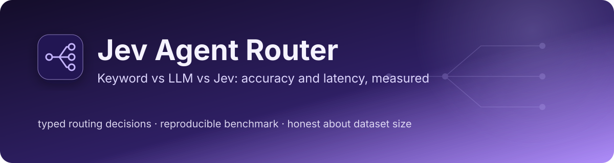

Portfolio project: benchmark of a decision-only model
Jev Agent Router
Keyword vs LLM vs Jev: accuracy and latency, measured
Routes customer messages to the right team (billing, bug, account, sales) three ways and compares them on the same labeled set: a keyword baseline, an LLM (Claude Haiku), and TypeSafe's Jev. All three return the same typed Route, so the comparison is about accuracy and latency, not output format.
See what is measuredView the repoWhat is not built
- 10 unit tests passing (latest CI run)
- Live Jev and Haiku runs on 2026-10-05, 3 runs
- Hand-written data, one annotator
- Cost not measured

01
The problem
Jev is a new kind of model. It does not generate text; it returns a typed decision with confidence in one pass. Routing is the clearest place to test the claim that this is faster and cheaper than an LLM without losing accuracy.
The aim was to learn how a decision-only model behaves next to an LLM and a plain baseline, and to build the harness first so that the numbers are reproducible, not anecdotes.
A silent default hides failures
Three of the original 16 messages matched no keyword and were sent to the default
bugroute. A router that can say no match is better, which is the idea behind confidence-based escalation.An easy dataset flatters the model
Jev scored 100% on the original 16 easy-ish messages; on the 120-message set it scores 98%. The easy set could not tell a good router from a mediocre one.
02
How it works
One labeled dataset feeds a benchmark that runs three routers behind one typed interface, then reports an accuracy and latency table.
Stages, one at a time
Stage 1 The dataset
120 hand-labeled messages, 30 per team. DATA_V1 is the original 16. Each message has an id, a label and a kind (easy, no-keyword, misleading-keyword, multi-intent, terse, noisy); 9 are flagged ambiguous and reported separately.
Stage 2 The benchmark
benchmark.py sends every message to each router, one request at a time, and can repeat the run (--repeat 3).
Stage 3 Three routers, one typed Route
A keyword baseline, Jev (typesafe:jev-latest, needs a TypeSafe key) and an LLM (claude-haiku-4-5-20251001, needs an Anthropic key). Every router returns the same Route enum, so a wrong answer is a wrong team and not a parsing failure.
Stage 4 The table
Output is an accuracy and p50/p95 latency table per router. For the model routers, latency includes the network round trip.
03
What is measured
All numbers are from live runs on 2026-10-05 from an Apple M4 Pro, on hand-written data. Each table carries its caveat directly underneath.
Run with python -m router.benchmark --repeat 3. Jev: typesafe:jev-latest. LLM: claude-haiku-4-5-20251001. Both through Pydantic AI with the same one-line instruction and the same typed Route output. Requests were sequential over the public internet, so latency includes the network. 120 messages, 30 per team; 9 are flagged ambiguous and reported separately.
| Router | Headline accuracy (111 messages) | Per run | p50 | p95 |
|---|---|---|---|---|
| keywords | 42% (141 of 333) | 47, 47, 47 of 111 | under 0.1 ms | under 0.1 ms |
| jev | 98% (327 of 333) | 109, 109, 109 of 111 | 116 ms | 170 ms |
| llm-haiku | 99% (329 of 333) | 110, 110, 109 of 111 | 607 ms | 804 ms |
Caveat Jev and Haiku are indistinguishable on accuracy here: the gap is two messages out of 111, and the three runs are repeats of the same 111 messages, not 333 independent samples. The author wrote the data and the baseline; labels are one person's judgment with no second annotator. One machine, one afternoon, sequential calls.
Jev's median latency is about 5 times lower (116 ms vs 607 ms), and its p95 is about 5 times lower. Whether Haiku's latency is typical is not known: a different prompt, region or batching would change it.
Jev's errors on the headline set were two messages labeled sales that it routed to account; the second arguably is an account issue.
Source: README results table; python -m router.benchmark --repeat 3
Same run as above. The ambiguous row uses 27 predictions; the last row is the full set including ambiguous.
| Slice | keywords | jev | llm-haiku |
|---|---|---|---|
| easy | 100% | 100% | 100% |
| no-keyword | 29% | 97% | 100% |
| misleading-keyword | 0% | 93% | 95% |
| multi-intent | 25% | 100% | 100% |
| terse | 27% | 100% | 94% |
| noisy | 27% | 100% | 100% |
| ambiguous only (27 predictions) | 11% | 44% | 59% |
| full set incl. ambiguous | 40% | 94% | 96% |
Caveat On ambiguous messages Haiku agrees with the author's labels more often (59% vs 44%), but those labels are arguable, so this says little. Slices are small and the kind mix is not real ticket traffic.
Source: README results table
Three consecutive runs per router on 2026-10-05, Jev called through typesafe:jev-latest over the public internet, one request at a time, so its latency includes the network round trip.
| Router | Accuracy on DATA_V1, 16 messages | p50 | p95 | Status |
|---|---|---|---|---|
| keywords | 81% (13 of 16) | under 0.1 ms | under 0.1 ms | measured |
| jev | 100% (16 of 16), all 3 runs | 109 to 113 ms | 172 to 254 ms | measured |
| llm-haiku | n/a | n/a | n/a | not run on this set; see the 120-message results |
Caveat The 100% figure applies only to DATA_V1, which is mostly easy messages. The harder 120-message set above is the one that separates the routers.
Source: README results table
04
Architecture pattern
Pattern A benchmark harness: one labeled dataset, three routers behind one typed interface, an accuracy and latency table.
All three routers return the same typed Route, so accuracy differences are wrong-team answers and not parsing failures. Jev and the LLM are optional and need their own API keys; the keyword baseline runs with nothing.
- dataset.py120 labeled messages (DATA_V1 is the original 16)
- benchmark.pyruns each router sequentially, optionally repeated
- keyword_routerneeds nothing; unmatched messages default to bug
- Jev
typesafe:jev-latest, needsTYPESAFE_API_KEY - LLMclaude-haiku, needs ANTHROPIC_API_KEY
- Typed Routethe same output type from all three
- Accuracy and p50/p95 tableper router
05
Competencies demonstrated
Evaluation design
One dataset and one typed output across all routers; limits written down in the methodology.
Measurement discipline
Results stay not run until they are run; dataset size is stated next to every number.
Technical judgment
A deterministic baseline first, so model results have something honest to beat.
06
What is not built or not verified yet
Taken from the repository's own README: what the results do not show, and the unchecked items on its to-do list.
- not verified
Cost
Not measured. Per-call cost was not computed for either model.
- limit
Real-world accuracy
The author wrote the data and the baseline, and the kind mix is not real ticket traffic. Labels are one person's judgment with no second annotator.
- not verified
Concurrency, tail latency, other days
One machine, one afternoon, sequential calls. Concurrent and repeated-day latency are not measured.
- not verified
Escalating low-confidence messages to the LLM
Jev returns calibrated probabilities (how it returns confidence was verified), but using that confidence to escalate unsure messages to the LLM has not been tested here.
- not built
A Jev backend for switchboard
Planned as a next step; not contributed.
07
Roadmap
- DoneGrow the dataset to 100 or more (done: 120, with ids, kinds and an ambiguous list)
- DoneRun Jev on the 120-message set, several times (done: 3 runs)
- DoneRun the LLM router several times (done: 3 runs,
claude-haiku-4-5-20251001) - DoneVerify how Jev returns confidence (a dict like
{"response": 1.0}plus per-class probabilities) - Not doneAdd a cost column from published per-token prices
- Not doneGet a second annotator for the labels and the ambiguous list
- Not doneAdd messages written by someone other than the baseline's author, or real (anonymized) tickets
- Not doneMeasure concurrent and repeated-day latency
- Not doneTest escalating low-confidence messages to the LLM
- Not doneContribute a Jev backend to
switchboard